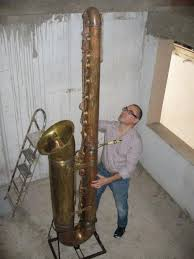

The Wonderful World of Saxophones
The Wonderful World of Saxophones
The Wonderful World of Saxophones
The Wonderful World of Saxophones
Learn more about the different types of saxophones
Learn more about the different types of saxophones
Learn more about the different types of saxophones
Learn more about the different types of saxophones
The saxophone is a remarkable musical instrument known for its rich, expressive sound and versatility. Invented by Adolphe Sax in the 1840s, the saxophone has become a staple in jazz, classical, and popular music.
Types of Saxophones
- Soprano Saxophone: Known for its bright, penetrating tone.
- Alto Saxophone: Popular among beginners and professionals alike for its balanced sound.
- Tenor Saxophone: Famous for its warm, full-bodied voice, often heard in jazz solos.
- Baritone Saxophone: The largest commonly used saxophone, providing deep, resonant notes.
Why Saxophones Are Wonderful

- They can play a wide range of musical styles, from classical to rock.
- Their expressive tone allows musicians to convey deep emotion.
- Saxophones are essential in jazz, giving the genre its signature sound.
- They are fun to play and offer endless opportunities for creativity.
Famous Saxophonists

Many legendary musicians have showcased the saxophone's beauty, including John Coltrane, Charlie Parker, and Sonny Rollins. Their performances continue to inspire new generations of saxophonists.
Conclusion
Whether you are a listener or a player, the saxophone's charm and versatility make it a truly wonderful instrument.